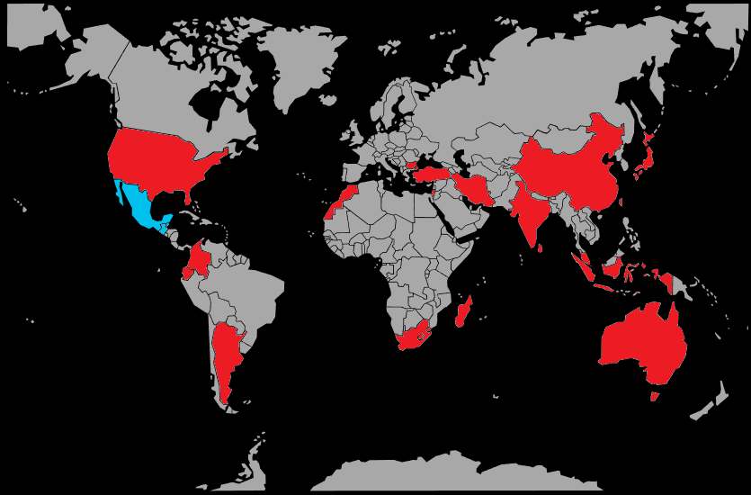

Systématique
- Ordre : Cyprinodontiformes
- Famille : Poeciliidae
- Genre : Xiphophorus
- Espèce : Xiphophorus hellerii
Xiphophorus hellerii, le porte‑épée, est un vivipare très répandu en aquariophilie, reconnaissable à la longue extension de la nageoire caudale du mâle.
Les femelles atteignent généralement 10–12 cm, les mâles un peu moins, ce qui en fait un poisson assez grand pour un vivipare classique.
L’espèce vit en groupe, très active, occupant surtout la zone médiane et supérieure des rivières et canaux, où elle nage sans cesse.
Les mâles peuvent se montrer insistants envers les femelles et rivaliser entre eux, ce qui impose un ratio favorable aux femelles et un aquarium suffisamment spacieux.
Mode : vivipare ; la femelle donne naissance à de nombreux alevins déjà formés après une période de gestation de quelques semaines.
Les portées sont fréquentes dans une eau chaude et bien nourrie, et les alevins sont rapidement capables d’accepter des nourritures fines sèches ou vivantes.
Dimorphisme sexuel : mâle plus petit, plus coloré, avec gonopodium et « épée » caudale marquée ; femelle plus grande, corps plus massif, sans épée.
Espérance de vie : en moyenne 3 à 5 ans en aquarium, parfois davantage dans de bonnes conditions.
Dans la nature, Xiphophorus hellerii fréquente rivières, canaux et zones calmes d’Amérique centrale, souvent en eau claire et bien ensoleillée, avec une végétation aquatique et des zones peu profondes.
Répartition
Origine naturelle :
- Amérique centrale, principalement du Mexique au Honduras, le long du versant atlantique.
- Cours d’eau peu profonds, canaux, zones marginales de rivières et fossés riches en plantes aquatiques.
L’espèce a été largement introduite en dehors de son aire d’origine, notamment dans les régions tropicales, où elle s’est parfois naturalisée dans des milieux au courant lent et bien végétalisés.
Paramètres de maintenance
Température : 22 à 28 °C.
pH : 7,0 à 8,0, eau neutre à alcaline.
GH : 12 à 25 °dGH, eau dure à très dure.
Courant : faible à modéré, avec bonne filtration et oxygénation.
Volume conseillé : à partir de 120–150 L pour un harem et quelques jeunes, avec une bonne longueur de façade pour la nage.
Régime alimentaire
Régime : omnivore opportuniste ; accepte pratiquement toutes les nourritures usuelles (flocons, granulés, congelé, vivant) avec un complément végétal régulier.
Une alimentation variée et riche en végétaux (spiruline, légumes pochés) contribue à la bonne santé générale, limite les problèmes digestifs et favorise des couleurs vives.